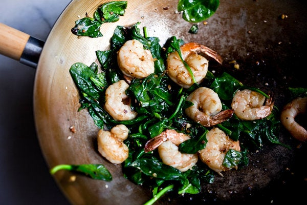

Sauteed Shrimp with Spinach

Description
Savory shrimp and fresh baby spinach sautéed with granulated garlic powder and black pepper powder.
Ingredients
- 1 ½ cups fresh baby spinach
- 1 ½ teaspoons granulated garlic powder
- 20 frozen shrimp, thawed
- 1 teaspoon ground black pepper
- 1 tablespoon olive oil, or as needed
Steps
- Place spinach in a large bowl; sprinkle with garlic powder and toss to coat.
- Place shrimp in a second large bowl; sprinkle with black pepper and toss to coat.
- Heat olive oil in a large skillet over medium-high heat. Add shrimp; cook and stir in hot oil until bright pink on the outside and the meat is opaque, about 5 minutes. Add spinach; cook and stir until just wilted, about 1 minute.